行程分段费用占比
按各预算区间中位数估算，用于快速判断哪一段最吃预算。
- 大阪 3日：约 15.7%
- 京都 2日：约 12.0%
- 濑户内海 4日：约 23.3%
- 九州 7日：约 48.9%
把整趟行程整理成一份可以直接带着走的旅行攻略，包含每日路线、预算统计、圣地巡礼、餐厅打卡和交通决策。
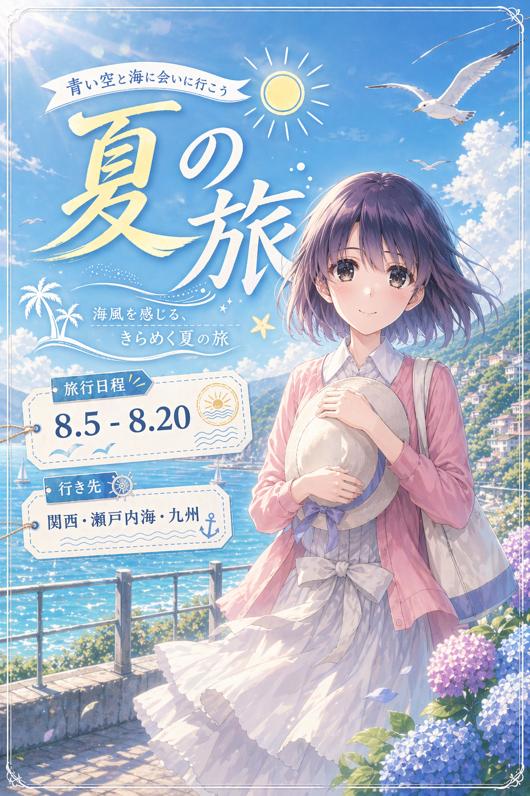
适合出发前做总览，也适合旅途中打开网页快速确认当日 checklist、交通 note 和预算汇总。
按当前方案汇总，住宿已按 1 CNY ≈ 23.3 JPY 粗算进总额。
按各预算区间中位数估算，用于快速判断哪一段最吃预算。
1）酒店如果不能提前寄存行李的，则将行李寄存在车站。
2）这次行程里最容易出问题的，不是普通市内交通，而是少数几个“强预约 / 强天气 / 强时刻表”项目：
- 神户 ➔ 高松 高速巴士
- 广岛 ➔ 博多 夜巴
- 宫崎 ➔ 福冈 Phoenix号
- 博多 ➔ 日田 的 由布院之森
- 友ヶ島汽船
- 8.15 阿苏 / 高森 / 火口线
这些都要在出发前再二次确认。
3）学生证不要默认哪里都能用。 JR / 高速巴士里提到的“学割”很多只认日本国内学校的在读学生证件，中国学校学生证通常不能直接用。
4）8.15 阿苏这一天是整篇里最不稳定的一天。 火山口开放、地方巴士、南阿苏铁道任何一段出问题，都要接受删点，不要硬全都要。
5）8.20 福冈机场是国际线回国，不是国内线。 最晚 16:00 - 16:30 到国际线，且要把国内线 / 国际线不是同一栋楼这件事一起算进去。
1）票券和周游券等优惠信息需要提前查，很多票券是购买日起 90 天内兑换，更适合直接在官网购买。
2）这次行程里需要提前买票 / 预约的几条长途巴士，基本都在乘车日前 1 个月左右开售，但并不完全一样：
- 神户 ➔ 高松 高速巴士：通常是 1个月又1天前
- 广岛 ➔ 博多 夜巴：通常是 1个月又1天前
- 宫崎 ➔ 福冈 Phoenix号：通常是 1个月前
所以稳妥起见，相关长途巴士建议从乘车日前 1个月又1天就开始盯票。
1）到一座新的城市，也可以多尝试便利店里的食物。
2）到达那天 8月5日是周三，中间有 8、9 和 15、16 两个周末，这两段住宿需要优先确认。

3）夏天天热，建议带一个帽子和一条毛巾。
4）记得带学生证，但买票前先确认适用条件；打卡大学时也可能会用到。
神户 ➔ 高松、广岛 ➔ 博多、宫崎 ➔ 福冈 Phoenix号博多 ➔ 日田 是否乘坐 由布院之森，如乘坐则提前预约友ヶ島汽船 是否正常运行8.20 福冈机场国际线值机时间与国际线航站楼交通这部分只作为票券资料备忘，当前行程是否购买以文中各天“交通情况整理”为准。
【铁道系列：北九州JR Pass与由布院之森购买及兑换完整攻略 | 日本电车 | 九州福冈博多 | 北九州JR Pass | 由布院之森】
https://www.bilibili.com/video/BV1cm421N7zK/?share_source=copy_web&vd_source=b0caf3d2f2fd355cbc150dae75815008
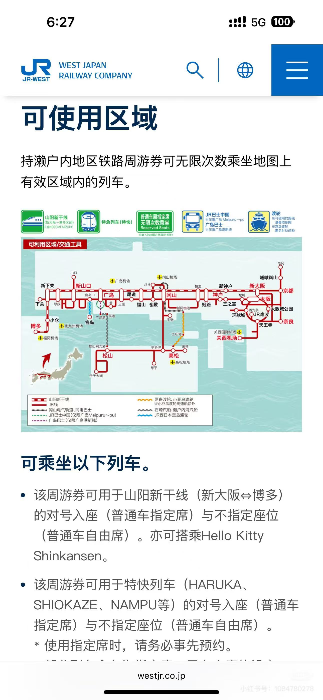

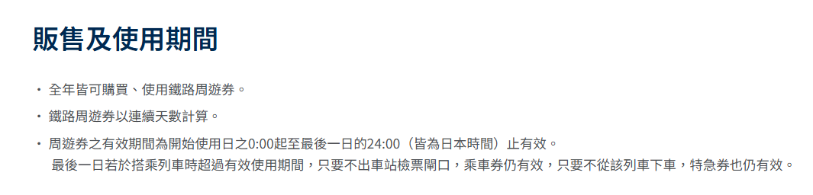
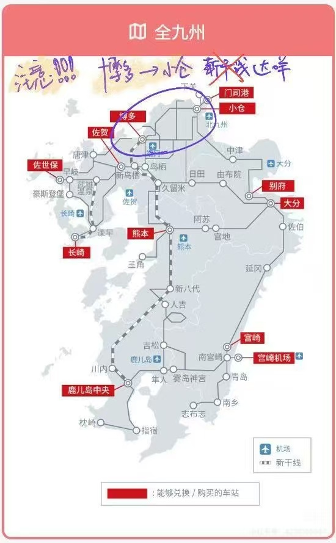
《夏日重现》《路人女主的养成方法》K-ON 相关圣地《轻音少女 K-ON!》《玉子市场》K-ON 相关圣地《吹响吧！上低音号》Fate/Zero《进击的巨人》《孤独的美食家》第六季第一集｜2000円 / 人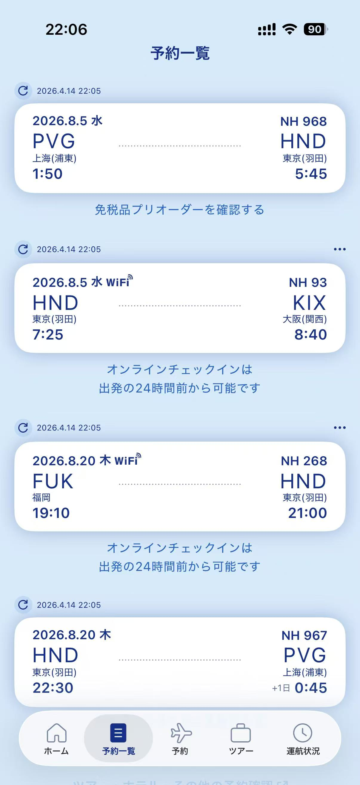
8:40落地关西机场，办好入境手续后，去大阪站有两个更实用的选择：
1）舒服版：JR HARUKA
到大阪站大约 45-50min，座位和行李体验更好，单程按 1800円 预算。
2）省钱版：JR 关空快速（Kansai Airport Rapid Service）
到大阪站大约 65-75min，单程按 1190-1210円 预算，适合不介意多花一点时间来换更低票价。

《孤独的美食家》第六季第一集｜2000円 / 人探店大阪市政府食堂，日本服务员阿姨夸我真能吃！_哔哩哔哩_bilibili
午餐时间11：00-15：00

1200円左右可以吃的很饱了；
落地直奔市政府，谁懂~
然后前往大阪城，大概30min

猴子的老家，本来不想进去的，但是为了真田幸村~

学生票600，带学生证！
大阪城天守閣

5楼是专门介绍大坂之役的展厅~

这里有真田幸村父子曾居住过的遗迹石碑，还有他们曾用过的“缘分之井”。
步行约1.5km到达

距离真田丸遗迹非常近

$〒543-0062 大阪府大阪市天王寺区逢阪１丁目３−24$
在天王寺附近

这部分全部游览完大概需要2.5h，这时大概时间是16:00左右

1） 导航jr天王寺站，出站后找てんしば，到这里打个卡（天王寺本身没什么意思
然后通过阿贝野步道桥（设计很有意思

2） 到达ハルカス300（展望台
门票2000円 ハルカス300(展望台)のチケット購入・予約
**但感觉没必要上去，有懂的吗？

搭乘电梯上去后，16楼：空中庭院**（和东京六本木有点像
设计还是很不错的
虽然城市建筑群不如东京，但展望台本身设计的比东京六本木city view的好
不过这种展望台有点审美疲劳，大阪其他类似的地方很多，没太大必要
（顺路打卡即可，不如东京塔一根的家伙）

そろそろ食べに行きましょう
5、大阪烧 甘辛や（孤独のグルメ第六季第一集）

下午五点到九点 open（周末中午十二点到九点）
大阪地标，不打卡不是大阪人~


晚上在这边随便逛逛酒早点回酒店休息吧~第二天早上要早起
上午8:40落地关西机场，办好入境和取行李后，乘坐 JR HARUKA 前往大阪站；
或者时间充裕的话，可以JR 关空快速（Kansai Airport Rapid Service），节省600円
如果酒店不能提前寄存行李，就先在大阪站寄存，之后再开始当天行程。
8月5日是工作日，成人820円
这一天如果按照 大阪市役所 ➔ 大阪城 ➔ 天王寺 ➔ 通天阁 ➔ 心斋桥 / 道顿堀 的路线走，基本可以回本；
如果中间有一两段改成步行，也问题不大，主要还是图省心，不用每段都单独买票。
1）可以在Osaka Metro全线和大阪市营巴士大部分线路上使用；
2）不包含 JR HARUKA，也不包含JR线路，所以机场到大阪站这一段还是要单独买票；
3）同样不包含南海、近铁、阪急、阪神、京阪等私铁线路；
4）如果坐出了适用范围，出站时需要另外补票。
1）到地铁站后，直接在Osaka Metro自动售票机购买即可；
2）这张票购买时不会印上使用日期，而是在当天第一次插进闸机时才会打印日期；
3）日期一旦打印出来，就只限当天无限次使用；
4）如果当天有从其他铁路直通进入大阪Metro的情况，最好提前买好这张票，避免换乘时麻烦。
先坐地铁去市役所，吃午饭；
从市役所去大阪城，大约30min；
天守阁 ➔ 玉造稲荷神社 ➔ 真田丸遗迹 ➔ 真田山三光神社 ➔ 安居神社
这一段以步行为主，其中从真田丸遗迹到三光神社很近，安居神社在天王寺附近；
安居神社之后，导航到 JR天王寺站，出站后找 てんしば，再通过 阿贝野步道桥 去 ハルカス300 / 16楼空中庭院；
这段距离不算太远，看体力决定是步行还是继续坐地铁；
傍晚去吃大阪烧，然后晚上逛心斋桥、道顿堀；
最后再坐地铁返回酒店即可。
1）这张一日券适合覆盖今天的市内交通，但机场进城的HARUKA不包含在内；
2）如果今天走累了，通天阁到心斋桥这段也可以直接坐地铁，不用硬走；
3）如果临时想加去梅田、难波等别的点，既然已经买了一日券，就可以放心多坐几段。
1800円
820円
如果Day1不买一日券、而是每段单独买票，按照这份路线大概会在 2660 - 3040円 左右；
所以Day1买 Osaka Metro一日券 依然是更省心、也更划算的安排。

远离市区的一个比较不错有小巧思的寺庙
早上八点到下午五点open
门票500円
交通规划 最早的一班从大阪站发出的电车如下：
大概 九点半 到达胜尾寺
游玩大概1.5h，比较有趣的是寻找漫山遍野的达摩

需要注意的是这班公交30min一班，如果人多可能面临需要等下一班的情况
所以需要预留出充分时间
1）漫山遍野的达摩
2）达摩开眼的仪式
3）里面可以打卡集章
交通规划 从胜尾寺离开后前往万博纪念公园大概需要1h的车程，考虑到排队等车的因素，建议预留出2h的通勤时间；
午餐 google maps推荐在LaLaport EXPOCITY吃，这里餐厅较多

「太陽の塔」–入館予約 票价1080円 / 枚
提前4个月预约，名额很有限，建议尽早预约确定！！

参观完大概下午3-4点之间；
从这里出发前往柳ヶ崎湖畔公园看花火大会，全程大概需要1h30min左右（考虑到当天交通情况
过程中换乘三次，
（来回车费的话2000円
先导航到Okina, 8-5 Matsubaracho, Otsu, Shiga 520-0831
吃晚饭先
作为日本三大牛肉之一的近江牛，不得不品尝。

下午五点open；定食在1500-1800円以内（如果要吃很高端的大概是2900円
之后从大津站出发前往大津京站20min，然后步行15min左右，到达柳ヶ崎湖畔公园
如果人很多就慢慢找位置，或者离远一点看，总是有办法的。


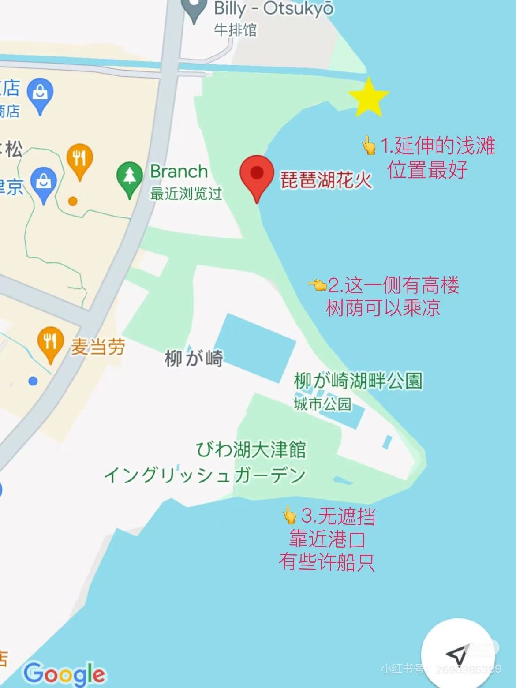
返回大阪站：东海道山阳线 大概1h10min
（可以逛逛、吃饭 - 但是好像也有一切价格虚高的店，注意甄别吧
这一天的路线是 大阪市区 ➔ 箕面萱野 ➔ 胜尾寺 ➔ 万博纪念公园 ➔ 大津 / 大津京 ➔ 柳ヶ崎 ➔ 大阪
麻烦的地方在于，交通工具横跨了 Osaka Metro / 北大阪急行 / 阪急巴士 / 大阪单轨 / JR
所以看了一圈之后，没有哪一张优惠券能明显比单独买票更划算。
工作日820円；
但这天最花钱的几段：箕面萱野、胜尾寺巴士、大阪单轨、JR去大津 / 大津京 都不包含在内，所以不推荐。
1日券2800円；
虽然包含大阪 - 大津 / 大津京这一段JR，但不包含胜尾寺巴士、箕面萱野方向、万博纪念公园这一段，算下来反而比单独买票更贵。
它的思路是包地铁和私铁，但是不包含JR，也不包含巴士；
而这一天既要坐JR去滋贺，又要坐巴士去胜尾寺，所以也不合适。
1日券3500円；
更适合在大阪市区密集刷景点和市内交通的日子，放在今天这种 远郊寺庙 + 万博 + 滋贺花火 的路线里，不划算。
先从大阪市区坐车到箕面萱野站；
从箕面萱野站乘坐直达巴士上山，平日早上9点之后班次很密；
从胜尾寺坐巴士回箕面萱野，再换乘前往万博纪念公园；
下午从万博纪念公园出发，前往大津吃饭；
吃完饭后，再从大津站往大津京方向移动，步行去柳ヶ崎看花火；
花火大会结束后，乘坐JR返回大阪站。
约480円
单程800円
单程800円
约440円
约910円
约200円
约960円
如果当天不是从大阪站 / 梅田附近出发，而是从别的地铁站出发，可能会有几十到一两百円的浮动；
另外，太陽の塔门票1080円 和 胜尾寺门票500円 这是门票，不算在上面的交通费用里。
《夏日重现》交通规划 七点半到达大阪站，在大阪站附近打卡梅田区建筑群，
然后九点左右乘车前往加太港
上楼梯风景不错，可以拍照

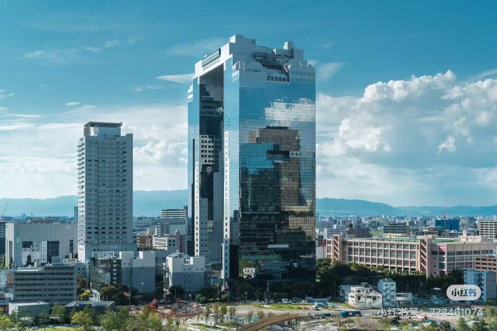
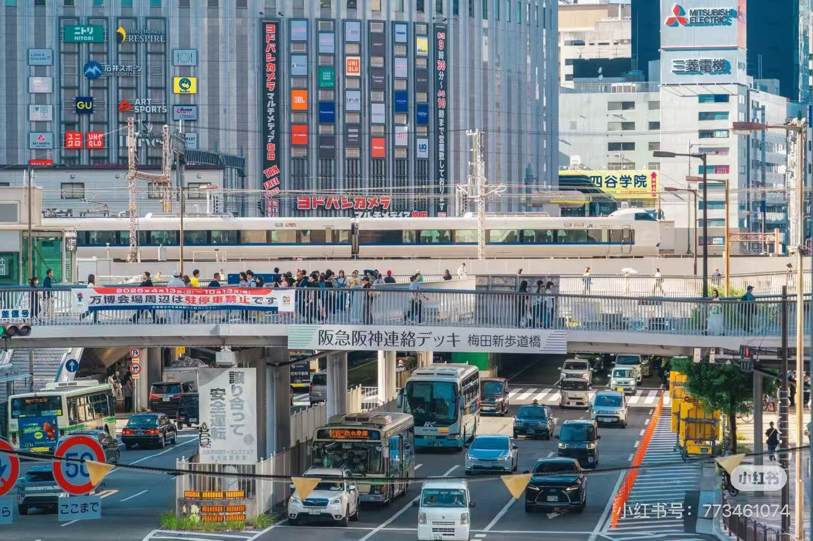
交通规划 从大阪到加太港乘坐电车2h
从加太港到堺市役所乘坐电车大概2h
从堺市役所返回大阪站大概40min
其中需要注意的是，南海加太线有可能坐到鲷鱼车厢（看运气
夏日重现圣地巡礼
一定要提前一天通过官网查询当日的更新記事，是否 荒天
HOME | 友ヶ島汽船 公式サイト


从加太港乘船上岛，大概20min
岛上基本没人，唯一的小卖部海の家营业极其不稳定，所以上岛前请准备好水源！
当地特色的海鲜店
人均1500円左右

等船过程中可以去餐厅旁边的淡嶋神社逛一逛（这沿着海岸线走一走我看也是极好的

a、加太港附近巡礼点位

这里只需要打卡左下角的几个，右上角的几个没必要
上岛后有小屋子可以拿打卡地图，所以不用担心，到时候跟着地图走就完了

21楼展望大厅 - 海 - 巨大古坟
早上九点到晚上九点开放


就在大阪站附近的商场，有卖很多不错的特产（据说有来自全日本的特产
另外，可以在这里解决晚饭
这一天的核心交通是 JR + 南海电铁 + 友ヶ島汽船；
看了一圈之后，没有哪一张通票能明显把Day3压到比单独买票更便宜。
纸质版已经在 2026年3月31日 结束发售，到了 2026年8月7日 这一天已经不能用了。
数字版目前还在卖，价格 2120円；
但它的内容是 指定车站 ⇔ 和歌山市 的往返 + 加太线1日自由乘车，
而且官方写了：途中站下车后，该乘车券不能再次使用。
Day3要去 加太 ➔ 堺東 ➔ 大阪，中间明确要在堺东停一站，所以这张票并不适合今天的路线。
这两张票更适合大阪市区密集移动；
Day3最花钱的部分是 南海电铁和友ヶ島汽船，所以也帮不上太多。
今天不是JR主场，JR只是在 大阪站 ↔ 新今宫 这一小段用一下；
主要还是南海和船，所以没必要。
早上从梅田打完卡后，直接回 JR大阪站 ➔ 新今宫 ➔ 南海电铁 ➔ 加太；
晚上从 堺东 ➔ 新今宫 ➔ JR大阪站 回来。
这条线和 梅田地铁去难波再接南海 在时间上基本是同一量级，通常不会明显更慢；
优势主要只是稍微便宜一点，大概能省 80円左右，而且换乘也不复杂。
先从大阪站坐JR到新今宫，再换乘南海电铁前往加太；
全程大概2小时左右，到了加太之后再步行去港口。
乘坐友ヶ島汽船上岛；
13:00上岛、15:30返回 这个安排是可以的。
从加太坐南海电铁返回大阪方向，中途转去堺东；
到堺市役所看完夜景 / 展望台后，再回大阪。
最后从堺东坐南海高野线回新今宫，再换JR返回大阪站；
之后去 KITTE Osaka 解决晚饭，顺路。
约1210円
2500円
约1010円
约490円
如果改走 梅田地铁 ➔ 难波 ➔ 南海 的传统路线，整体大概会贵 80円左右；
但两条线时间差不大，所以如果当天更想走“看着更直接”的路线，改回难波方案也完全可以。
1）友ヶ島汽船需要在出发前一天和当天都查看官网更新，荒天有可能停航或只开部分班次；
2）官网写了不接受前一天预约，而且当天会发乘船整理券，所以不要卡点到港口；
3）岛上补给不稳定，水和简单食物最好在上岛前就准备好；
4）如果当天风浪较大，返程班次可能会调整，堺市役所这段就要机动一点，不要把时间卡得太死；
5）友ヶ島汽船通常周三停航，但暑期会有例外，还是以当天官网公告为准。
连住 8.5 - 8.7 共3晚，先按 人均120元 / 晚 记；
重点看 离地铁站不远、往返大阪站 / 梅田顺手、支持提前寄存或退房后寄存 这几个条件。
房间挺好的，该有的都有，唯一的问题就是不可提前取消。
从地铁站到市中心大阪站20min，大概每晚人均120元。
1）连住 8.5 - 8.7 共3晚，不用天天搬行李；
2）去大阪站 / 梅田不算远，适合你这三天都以大阪市区为交通起点；
3）Day1 晚上回道顿堀后、Day2 花火结束回大阪、Day3 从堺东回大阪，收尾都还算顺。
1）因为不可提前取消，最好等机票和前几天主线路线彻底定死后再锁；
2）确认是否支持 提前寄存 / 退房后寄存，这样 Day1 落地和 Day3 机动会更轻松。

1）早餐统一按 便利店 600円 计算；
2）没写死具体餐厅的正餐，按当地便宜餐馆均价估；
3）以下只算三餐，零食和酒水不另外展开。
早餐：便利店 600円
午餐：大阪市役所食堂， 1200円左右
晚餐：大阪烧 甘辛や，按 人均2000円 计算
早餐：便利店 600円
午餐：万博 / EXPOCITY 一带，未写死具体店，按商场简餐记 1000 - 1500円
晚餐：Okina，文中已写定食 1500 - 1800円
早餐：便利店 600円
午餐：加太 満幸商店，文中已写 人均1500円左右
晚餐：大阪市区 / KITTE Osaka 一带，未写死具体店，按便宜餐馆记 1000 - 1500円
1）这里只统计景点门票 / 观览费，不含交通、餐饮；
2）按 2026 年 4 月已核到的价格整理；
3）像 ハルカス300 这种已经写明“没太大必要”的项目，会单独标成可选。
固定门票：
1）大阪城天守阁：1200円
大阪城天守阁官方
可选门票：
2）ハルカス300（展望台）：2000円
Harukas 300 官方
1）胜尾寺：500円（文中已写）
2）太陽の塔：1080円
太陽の塔官方
当前主线里的 友ヶ島、堺市役所展望、梅田打卡点 都不额外收固定门票。
《路人女主的养成方法》K-ON 相关圣地《轻音少女 K-ON!》这是第一选择，也是最顺手的方案；
早上先到酒店放箱子，再去岚山，等中午回来时正好办理入住。
如果酒店不能提前寄存，就直接用京都站寄存；
中午回京都站附近时再取走，或者顺路去酒店办理入住。
上午还要接巴士上爱宕念佛寺方向，带箱子会很拖节奏。
愛宕念仏寺 ➔ 嵯峨鸟居本 ➔ 祇王寺 ➔ 二尊院 / 常寂光院二选一 ➔ 岚山竹林 ➔ 野宫神社 ➔ 渡月桥
这一天跨了 JR / 阪急 / 巴士 / 近江铁道，没有特别合适的一日券能完整覆盖；
最自然的方式还是直接刷IC卡 / 单独买票。
先处理行李，再开始当天行程。
从京都站去岚山，之后搭巴士上到爱宕念仏寺附近，开始一路往下逛。
中午回酒店附近，办理入住、放好行李，顺便把午饭简化解决；
这一天不建议再专门绕去远处吃正餐。
从京都站出发，坐JR到米原 / 彦根方向，再换近江铁道去豊郷駅。
下午结束后返回京都，再去伏见稻荷夜爬；
夜爬结束后从JR奈良线回住处最顺。
单独买票大约 4200 - 4700円
1）上午岚山不要贪太满，不建议把二尊院和常寂光院都塞满；
2）午饭建议简单解决，把时间留给丰乡和夜爬稻荷；
3）如果丰乡那边比预想晚结束，伏见稻荷基本可以，因为夜爬弹性很大。
先从大阪到京都站附近；
如果酒店可以提前寄存行李，就先去酒店前台放箱子；
如果酒店不能提前寄存，就把行李寄存在京都站寄存柜 / 官方寄存点，中午回京都站附近时再取。
特色：京都古老的小路，相对岚山游客比较少，适合作为京都第一天的上午主线。
路线A 从京都站乘坐JR到嵯峨嵐山駅，18min；
再从嵯峨嵐山駅搭乘巴士到Otagidera-mae，20min
路线B 从大阪先到梅田站，然后乘坐阪急京都线到达桂站；
换乘岚山线，到达阪急岚山站；从梅田算起时间大概1h10min，全程大概1h30min
然后从阪急岚山站步行通过望月桥，到达嵯峨嵐山駅
这班巴士的时刻表要注意，出发的前一天查询好，再决定好出发时间

从爱宕念佛寺一路下山游玩


门票300円左右
上午不要排得太满，二尊院和常寂光院不建议都塞进去，不然下午会开始赶。

路人女主的竹林道圣地巡礼

这里同样是一处 K-ON的圣地

从岚山返回京都站附近，先办理入住、把行李正式放进房间；
如果早上是寄存在京都站，这时候顺路取走再去酒店。
这一天中午建议简单解决即可，便利店、站内快餐或者酒店附近都可以；
不要再专门绕去远处吃正餐，把时间留给下午的丰乡和晚上的伏见稻荷。
中午休整之后，从京都站出发前往丰乡小学。
从京都站乘坐东海道山阳线到达米原 / 彦根方向，
然后换乘omi Tetsudo（近江铁道）前往豊郷駅，全程大概1h45min；
近江铁道这部分不包含在JR通票里
由于丰乡小学校附近没什么吃的，所以建议在彦根站附近吃，可以给这里留一点点时间。


巡礼游玩结束后，下午 / 傍晚返回京都，准备去伏见稻荷夜爬。

晚上夜爬，很有感觉，白天完全比不上晚上。
从京都站方向去稻荷 / 伏见稻荷很顺；
夜爬结束后，从Inari稻荷站坐JR奈良线回住所即可，
末班车大概在晚上23:30左右，回得去。

回去之后早点洗洗睡吧，第二天还要早起
《玉子市场》《吹响吧！上低音号》这一天里，西本愿寺降为纯机动点；
只有在上午回到市区特别早、而且体力还很充足的时候，再考虑临时插入。
这一天主要会用到 叡山电车 / 巴士或京都市内接驳 / 京阪或JR / 步行
整体上仍然是IC卡最自然；
没有哪张通票能像大阪那样明显更划算。
最灵活，适合你当天根据体力决定宇治和四条河原町停留多久。
如果这一天明确走 贵船 ➔ 出町柳 / 下鸭 ➔ 宇治 这条线，而且宇治也打算改走京阪系统，可以考虑；
但它不是绝对省钱，更大的优点是省脑子。
早起去贵船，建议还是把贵船放在今天最前面。
回到洛北之后，再接天ぷら鈴和下鸭神社这一带，动线最顺。
这一段基本都可以靠步行串起来，节奏会很舒服。
傍晚再南下去宇治。
如果下山后体力还可以，再去四条河原町；
如果已经累了，就直接回住处，这一天也已经很完整了。
大约 1800 - 2400円
大约 2100円 + 少量接驳费用
1）贵船回来后，洛北这段适合慢慢走，不要再给自己塞太多硬景点；
2）宇治最好放在傍晚到傍晚后，氛围会更好；
3）四条河原町是纯加分项，不是必须完成任务。


早上六点半起，去京都站坐巴士到 Mototanaka駅换乘叡山电车（鞍马线）
如果能搭乘到 “Kirara（きらら）” 号展望列车，那运气就太好了~
在“市原站”到“二之濑站”之间，列车会经过著名的隧道，这时开始录制~
八点到站，步行约半个小时从贵船口➔ 贵船神社

游玩后，乘车返回洛北 / 出町柳方向。
贵船回来之后，接这家店最顺。

中午十一点半到两点（午市性价比较高）；下午五点半开始营业；星期二定休，不影响
京都本地人极力推荐的老店，人均1800円左右
ビール很棒，记得点！
午饭后，步行15min左右，即可到达下鸭神社。
鸭川，无需多言
相对比较小众，而且糺之森的风景很棒，很适合下午漫步

注意：这里的蚊子据说是全京都最毒的~
路线：自北向南，一路下去，直到河合神社
主观美貌，可以稍微看看
走出神社后，就到了鸭川三角洲
玉子市场圣地巡礼 以及本地人游客都有，生活合文艺都有，值得逛

可以在这多坐会，享受，休息好了再走
另外，这里还是K-ON的圣地

让那美丽的爱再一次降临吧|70年代京都_哔哩哔哩_bilibili


吉田寮目前依然有学生居住，它并不是作为一个对外开放的“旅游景点”存在的，而是属于京都大学学生的私人生活空间。根据吉田寮学生自治会的官方最新规定，目前的参观要求如下：
1. 必须获得许可： 参观者绝对不能擅自进入建筑内部或随意到处走动。必须首先前往现栋（老楼）的接待处（受付）。
2. 主动沟通： 在接待处向在场的寮生（住宿学生）打招呼说明来意，并明确提出参观请求。
3. 遵守安排： 只有在获得现场寮生的明确许可后，才能进入内部。通常情况下，如果当时条件允许，会有寮生专门负责引导外部人员参观。
背景与注意事项： 吉田寮的木造老楼建于 1913 年，是日本现存最古老的学生宿舍。近年来，它一直处于京都大学校方要求“强制清退”与学生“拒绝搬出”的争议和法律诉讼之中。建筑内部非常原生态且杂乱，承载了极强的自治文化与历史痕迹。
京大爷表示：
一般在门口登记一下就可以进去参观。可以跟当时出现在门口附近的寮生说一下，问问能否参观。

如果这一天上午回到市区特别早，而且体力还很充足，可以临时插入；
否则就直接跳过，不影响主线质量。
尽量赶在晚上六点之前到达宇治，因为抹茶点六点しめる。
傍晚南下去宇治。
预估到达时间：17:30 - 18:00
离京都并不远，乘坐JR奈良线大概就30min的时间，单程240円


就在宇治站出去后不远，宇治有名的抹茶老店，可以买一根雪糕尝尝(600円左右)
但需要注意这家店晚上六点关门。

不来会遗憾的一条河川，沿河有源氏物语的作者的雕像

京吹圣地

山上风景也很好，可以眺望宇治川、周围的古寺院以及宇治城市建筑群
时间规划 大概六点左右开始准备返回京都；
如果体力还可以，晚上再去四条河原町 / 祇園那一块；
如果已经累了，就直接回住处，这一天也已经很完整了。

很漂亮的一条街


饺子店，人均1500円以内
连住 8.8 - 8.9 共2晚，当前按 旅館 あづまや，人均267元 / 晚 记；
重点看 京都站附近、支持早到寄存行李、夜爬稻荷后回住处方便 这几个条件。
一晚人均267元，有公共泡澡的地方。
1）连住 8.8 - 8.9 共2晚，适合把京都站当作这两天的放射型中枢；
2）Day1 早上先寄存、岚山回来再入住、晚上稻荷结束回住处，这种节奏很顺；
3）Day2 无论最后从宇治还是四条河原町回去，都比天天换酒店省心很多。
1）是否支持 早到寄存行李，这对 8.8 上午先跑岚山非常关键；
2）公共浴场的开放时间要提前看一眼，避免夜爬稻荷回来太晚错过。
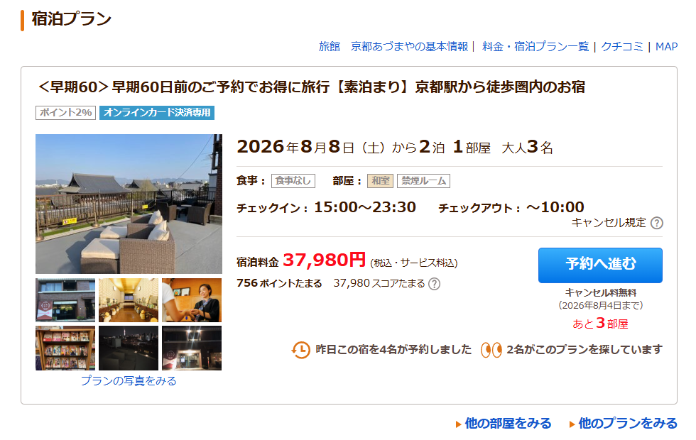
1）早餐统一按 便利店 600円 计算；
2）Day1 没有写死午晚餐餐厅，按京都站 / 稻荷周边便宜简餐估；
3）宇治抹茶雪糕、零食和饮料不计入三餐总额。
早餐：便利店 600円
午餐：京都站附近简餐，按 800 - 1200円
晚餐：伏见稻荷 / 京都站附近简餐，按 900 - 1400円
早餐：便利店 600円
午餐：天ぷら鈴，文中已写 人均1800円左右
晚餐：四条河原町 / 京都市区晚饭，若走备选 高辻 亮昌 可按 1500円以内 理解；这里先按 1500円 记
1）京都这两天多数神社本身免费，主要是嵯峨野寺院这一串会产生门票；
2）按 2026 年 4 月核到的信息整理，像 二尊院 / 常寂光寺二选一 会写成区间。
1）愛宕念仏寺：先按 500円 预留
备注：文中原先写过 300 円，但 2026 年资料已有调整信息，先按 500 円更稳。
2）祇王寺：300円
祇王寺官方
3）二尊院 / 常寂光寺 二选一：约 500 - 600円
二尊院官方
当前主线里的 贵船神社、下鸭神社、鸭川、京都大学、宇治、大吉山展望台、四条河原町 都不需要固定门票。
铃芽之旅 / Fate Zero 相关Fate/ZeroFate/Zero这一天的主线不用大改，神户港保留；
交通上也没有哪张通票能像大阪 Day1 那样明显省钱，直接用 JR单买票 / IC卡 最自然。
1）京都站 ➔ 舞子站：JR；
2）舞子站 ➔ 姬路站：继续坐JR；
3）姬路站 ➔ 新长田站 ➔ 三宫站：都建议继续坐JR。
4）三宫站 ➔ 北野异人馆街 ➔ 维纳斯桥：这段以步行为主，本来就顺路，不需要额外专门加交通；
5）下山后 ➔ 神户港：看体力直接刷IC坐市内交通即可，港口这段保留没有问题。
按当前这条主线，整天交通大约 3300円左右；
其中大头还是 京都 ➔ 舞子 ➔ 姬路 ➔ 神户市区 这几段JR。
1）这一天如果中午在三宫吃饭，建议把大件行李先放酒店或寄存，不要背着一路爬北野和维纳斯桥；
2）北野主要就是去维纳斯桥途中的城市散步段，不需要再额外拆出很多停留时间；
3）晚上去神户港的最后一段不必死卡某一条线，按当时体力和下山位置现场刷IC最省心。
时间安排 上午早起，7:30前从京都站出发，上午经过明石大桥，参观姬路城；
下午神户港口和市区闲逛，傍晚去维纳斯桥
铃芽户缔和fate zero取景地

交通 从京都站，经过大阪站，乘坐东海道-山阳线，到达舞子站下车，全程1h20min
在舞子公园，即可看到明石大桥

建议九点半前从这里再次出发，前往姬路城

从舞子出发，继续乘坐东海道-山阳线，大概车程1h即可到达
(上午九点到下午四点开放)

特殊 姬路城布丁有名なんです
时间规划 下午返回神户三宫站
返回的途中在新长田駅下车，打卡著名的雕塑
从新长田駅到神户三宫只需要15min


レッドロック Red Rock

价格比较亲民，2500円左右就可以打卡

感觉可以一人点一份黑毛和牛盖饭，然后合资点一份神户牛里脊
要我说，就得中午和牛晚上コンビニ啊
另外，饭后可以在三宫站商店街逛一逛，留心足元的惊喜~
时间规划 15:00：生田神社
15:30：神户北野异人馆街（向北步行约 15 分钟
16:30：维纳斯桥（沿着山间步道 步行20min左右即可到达
18:00（左右）：下山，坐车前往神户港（具体坐什么到时候再看

依山而建的欧式建筑群，同时也是fate zero的圣地


同时，这里也是fate zero中的圣地


这一次，为了我战胜直升机吧~

但其实这个好像是为了纪念阪神大地震重建家园修建的
哈哈，这下就更地狱了……
另外，港湾人工岛上还有个镂空的更好看的 Be Kobe，如果能找到就最好了~
早餐：便利店 600円
午餐：Red Rock，按 2500円左右
晚餐：神户港 / 三宫周边简餐，按 1000 - 1500円
今晚住 三宫附近酒店，先按 人均220元左右 记；
优先看 可寄存行李、晚到可入住、离三宫站近 这几个条件。

4星级，日本人开的，可以行李寄存，三张单独的床的3床房
主要是交通很方便，离神户三宫很近。
这晚先按人均220元左右记。
1）只住 8.10 这1晚，重点就是图一个三宫附近好进好出；
2）白天从京都一路跑到神户港，晚上不想再拖着行李远转；
3）第二天一早还要去三宫BT坐高速巴士去高松，住得近会非常省心。
1）能不能 提前寄存 / 晚上较晚入住；
2）三床房是否已经按实际人数锁定，避免临近变房型。
这一天在已经放弃原先的JR通票思路、又想稳稳赶上中午男木岛轮渡的前提下，最合适的就是已经选定的早班高速巴士：
1）更便宜：JR这天如果单买票，城际段明显更贵；高速巴士普通票 4300円，早卖还能继续压低；
2）对男木岛更稳：9:57就到高松站，步行去高松港只要 5-7分钟，中间还有余量；
3）比ferry更贴合当天节奏：Jumbo Ferry虽然更便宜，但到高松通常已经偏中午甚至更晚，缓冲太小。
1）三宮BT 7:05 ➔ 高松駅高速BT 9:57
乘坐 高松エクスプレス神戸号；
普通成人单程 4300円；
如果抢到 早売21 是 3600円，早売5 是 3800円。
2）高松駅高速BT ➔ 高松港
步行约 5-7分钟，这一段不用再额外坐车。
3）高松港 ⇔ 男木岛
乘坐雌雄岛海运轮渡；
往返 1020円；
8月1日到8月20日是夏季繁忙期时刻表，12:00 这班仍然有高松发男木岛的船。
1）按普通票算：4300 + 1020 = 5320円
2）如果抢到早売21：3600 + 1020 = 4620円
3）如果抢到早売5：3800 + 1020 = 4820円
1）学割不能用中国国内学校的学生证；学割只适用于在日本国内有校址的学校在读学生；
2）如果符合学割资格，乘车时必须带实体学生证 / 生徒手帳，电子学生证不适用；
3）学割不能和早売21 / 早売5叠加，所以这次更应该优先看成人早卖价；
4）这条线的预约 / 发售从乘车日前“1个月又1天前”开始；
5）早売21 / 早売5 顾名思义，需要分别在出发前 21天 / 5天 完成购买，过期没买会失效；
6）暑假是旺季，7:05 这班建议尽早订，不然就会被挤到 8:45 那班，留给男木岛的缓冲明显变小；
7）相关页面：
JR四国巴士路线页
JR四国巴士时刻页（2026年4月1日改正）
JR四国巴士学割说明
男木岛 / 女木岛轮渡时刻与票价
优点：费用更稳、直达高松、最适合当天中午接男木岛轮渡
缺点：需要早起

乘坐高速巴士经过淡路岛前往高松，全程大约3h，普通票价4300円；
目前已经确定采用 7:05 这班早班车，这样到高松后缓冲最充足。
过程中：跨越明石海峡大桥、纵贯淡路岛、跨越大鸣门桥，能够沿着濑户内海海岸线前进，尽量选择右侧靠窗的座位

最终到达的都是高松站，从这里到高松港步行5-7min即可到达。
现在就按七点这班巴士来理解即可，这样十点前后到高松，留给上岛前活动的余量最大
从高松站出发步行10分钟就能到，很近

门票只要200円，为什么不进去看看呢
【中日双语】香川县高松城遗址上发现汉字刻字涂鸦，有写中国，日本，好等汉字_哔哩哔哩_bilibili
哈哈哈，不知道天守台上这个涂鸦还在不在，要是在的话真得去打卡一下了

大概是这一块位置，但估计很难看得清了
从高松港乘渡轮前往（最好赶上中午12点那班），经过女木岛，全程大概40min，往返票价1020円


1）上岛之前记得在便利店买一些猫条（猫のおやつ
2）浅海处甚至能看到红色的野生水母
下午五点前さえ 返航，回到高松站

没想到吧，夏日重现最有名的场面居然在这里
冷乌冬是这边的特色，可以找个地吃一下
可以去酒店旁边的片原町商业街逛一下

真心觉得能到海边坐着边喝点啤酒边聊聊天，是最惬意不过的事情了（平时都没有这种机会吧
早餐：便利店 600円
午餐：高松冷乌冬，按 700 - 1000円
晚餐：片原町 / 高松站周边简餐，按 1000 - 1500円
今晚住 Hotel Areaone TakamatsuCity，先按 人均240元 记；
重点是离 高松站 / 港口 不远，方便第二天继续赶路。
先按人均240元记（可以去日文官网上对比下价格）。
1）只住 8.11 这1晚，主要目标是离高松站 / 港口一带别太远；
2）白天男木岛回来后还能顺手去片原町商业街和海边走走；
3）第二天一早去尾道，住在高松市区比住得太偏更稳。
1）如果最后抢到更好的早卖巴士票，也别忘了顺手对比一下酒店官网价；
2）确认入住时间，避免男木岛回来太晚影响 check-in。

~~2、高屋神社 本宮鳥居 （大概率舍去~~
从高松駅出发到观音寺站 JR 大概1小时15min；

后乘坐巴士从观音寺站前往高屋神社（下宫）— 周日停运；

这一天没有明显更优的通票方案，还是以 JR单买票 / IC卡 最直接；
既然已经判断体力足够，岛波海道骑行 + 傍晚千光寺 可以保留，不需要为了省事删掉千光寺。
1）高松 ➔ 冈山 ➔ 尾道
以JR换乘为主，按当前这条线，城际交通大约 3000円左右；
2）尾道站 / 尾道港周边移动
市内以步行为主，车站到港口、到商店街都不算远；
3）千光寺
如果晚上想省腿，可以把 缆车片道500円 当作机动项；体力够的话也可以直接步行上去。
这部分更像活动费用，不算在上面的公共交通里：
1）租车 3000円左右；
2）途中船费 1300円 是旧资料，临出发前建议再看租车点和对应航线的实时收费。
1）只算城际和市内基本移动：约 3000円
2）如果加千光寺缆车片道：约 3500円
1）这一天真正吃时间的是骑行，不是城际交通，所以关键还是上午尽量早点离开高松；
2）如果傍晚回到尾道时天色已经晚了，千光寺就优先走“缆车上 / 慢慢走下”的省体力版本；
3）尾道这天不用额外为了票券折腾，简单刷IC反而更稳。
时间规划 上午从高松早点出发（具体多早再看）坐电车，早点到达尾道，去港口取车骑行；
中饭可以在骑行路途中解决，晚上回到尾道在小城内乱逛；


Ps：尾道的桃子もも好像很有名
从高松市乘坐电车到冈山（おかやま）换乘，全程3h不到一些、3000円
（电车开始运营的时间很早
时间：下午五点之前
猫の细道
缆车500円 片道


初心者コース：从尾道港口出发，沿着向道环骑一周，全程18km，约2h
中級コース：从尾道出发，经过向岛、因岛、生口岛，从瀬戸田沢港乘船返回尾道港，全程30km，约3-4h （过程中需乘坐轮渡，具体费用临出发前再查）
租借费用先按3000円左右记，途中轮渡费用不再按旧资料写死


早餐：便利店 600円
午餐：岛波海道骑行路途中简餐，按 1000 - 1500円
晚餐：尾道老城 / 商店街简餐，按 1200 - 1800円
今晚住 见晴亭 / 临海和室旅馆，先按 人均220元左右 记；
氛围感强，但海景好房通常 不能取消，要尽量早点订。
尾道住宿方面： 日式和室 临海 见晴亭 三人人均200多一点
优点 0差评民宿、可以看景、淋浴等设施比较老，也是一种体验了
(开业时间tm 1921年，我嘞个，比辛亥革命小10岁)
这晚先按人均220元左右记。
1）只住 8.12 这1晚，和当天“骑完岛波海道、晚上在尾道慢慢收尾”的气质很搭；
2）住临海老旅馆，比住标准商务酒店更有尾道味道；
3）第二天一早去广岛也不会太折腾。
1）海景好房通常不能取消，订之前要先确定这天一定住尾道；
2）老房子的淋浴和隔音不要按新酒店预期去想，体验感更多来自氛围。
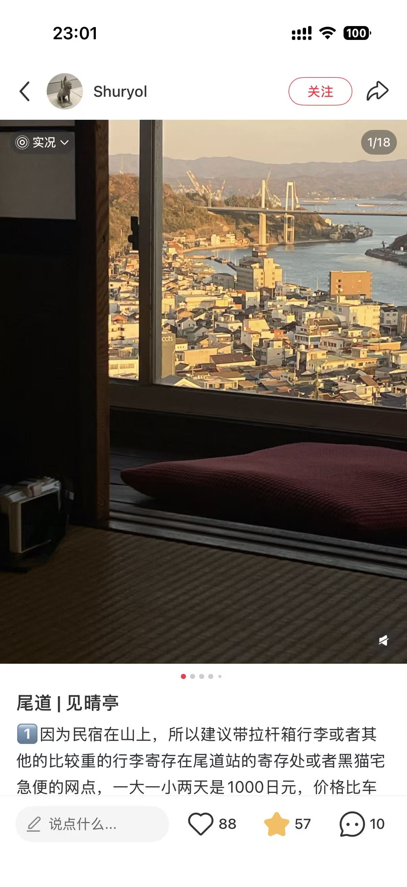
另外，这家民宿的咖啡厅很不错
既然已经明确决定晚上不住广岛，改坐夜间巴士去博多省一晚住宿，那这一天就按：
来执行最顺。
1）尾道 ➔ 广岛站
JR山阳线，按你原文这段大约 1520円；
2）广岛站 ⇔ 宫岛口
JR往返大约 840円；
3）宫岛口 ⇔ 宫岛
轮渡单程 200円，往返 400円；
另外，进宫岛时要再加100円宫岛访岛税；
所以这段实际按成人算应记 500円。
4）广岛 ➔ 博多 夜间巴士
这里可以先按 5000円左右 做预算；
但官方目前已经是动态票价，真实价格会随余位和日期浮动，范围大约 4000 - 10000円。
大约 1520 + 840 + 500 + 5000 = 7860円左右
如果夜巴当天卖得贵，整体会再往上浮动。
1）这个方向更适合看 广島ドリーム博多号；
2）目前官方夜行班次示例是：广岛站新干线口 23:30 发，博多巴士总站 7:01 到；
3）这条线官方写明是繁忙期限定运行便，所以到时候一定要先看 8月13日 是否在可运日历里；
4）这条线的预约 / 发售从始发站发车日前“1个月又1天前”的上午9点开始；
5）夜巴车型和设备可能会因当天调度变化，不要默认每一班都有完全相同的座位和设备；
6）相关页面：
JR巴士中国 路线详情
WILLER 检索页
Ps：来了广岛，当然要吃广岛烧了！
时间安排：上午从尾道出发到达广岛，上午广岛和平资料纪念馆、下午去宫岛；
晚上回到广岛站附近吃饭，随后乘坐夜间大巴前往博多。
从尾道出发，乘坐 JR山阳线 到达广岛站（全程1h30min 票价1520円


门票大概200円
open time：上午七点半到晚上七点
（大概需要半天的时间，下午游玩

从广岛站乘坐JR 到宫岛口，过程30min
步行5min到轮渡码头，乘船前往宫岛，船票往返400円，另加100円宫岛访岛税

宫岛
岛上自然生态保护得特别好，很多野生动物，可以慢慢逛
岛上具体的景点有待进一步了解扩充
Ps：岛上的“宫岛咖喱面包研究所”的咖喱面包极力推荐！
具体吃哪家店有待进一步考虑~
晚上按夜巴方案离开广岛，第二天一早到博多。
早餐：便利店 600円
午餐：广岛市区简餐，按 1000 - 1500円
晚餐：广岛烧，按 1200 - 1800円
今晚按 夜间巴士去博多 处理，不住广岛；
等于用夜巴替代一晚住宿，但要接受睡眠质量和次日体力波动。
1）早餐统一按 便利店 600円 计算；
2）没写死具体店的午晚餐，按当地便宜餐馆均价估；
3）姬路布丁、宫岛咖喱面包等零食不计入三餐总额。
早餐：便利店 600円
午餐：Red Rock，文中已写 2500円左右
晚餐：神户港 / 三宫周边简餐，按 1000 - 1500円
早餐：便利店 600円
午餐：高松冷乌冬，未写死具体店，按当地便宜乌冬店记 700 - 1000円
晚餐：片原町 / 高松站周边简餐，按 1000 - 1500円
早餐：便利店 600円
午餐：岛波海道骑行路途中简餐，按 1000 - 1500円
晚餐：尾道老城 / 商店街简餐，按 1200 - 1800円
早餐：便利店 600円
午餐：广岛市区简餐，按 1000 - 1500円
晚餐：广岛烧，未写死具体店，按当地常见一份记 1200 - 1800円
1）这一段的收费景点不算特别多，主要集中在 姬路城、玉藻城、广岛和平资料馆、严岛神社；
2）像尾道骑行、神户港、北野异人馆街城市散步本身不一定强制买门票，所以这里只记当前主线里比较明确的票。
1）姬路城：2500円（2026年3月起非姬路市居民成人票）
姬路城官方
1）玉藻城：200円（文中已写）
当前主线里 岛波海道骑行、千光寺夜景动线 不单独按固定门票计；
若当天只坐缆车上山，已记入交通机动项，不重复算到门票。
1）广岛和平资料纪念馆：200円（纯纯的公益
2）严岛神社：300円（如果进入神社回廊内部）
严岛神社官方
《进击的巨人》既然已经决定 8.19 从宫崎坐高速巴士回福冈，那么 不建议购买全九州JR Pass 7日券；
官方当前价格是 26,000円，而且官方明确写了：不能用于 B&S Miyazaki buses，也不包含地铁、普通巴士和他社线路。
JR Kyushu Rail Pass
这一天可以跑，但前提是把它当成夜巴之后的高强度日；
不建议再额外加点，重点就是把 日田主线 + 当晚到熊本 跑顺。
1）到博多后，博多 ➔ 日田 可按两种思路选：
- 普通JR：约 1h56min - 2h，单程 1930円
- 由布院之森：约 1h20min，单程约 3030 - 4160円
2）到日田后先拿纸质巴士时刻表，再决定馆和大山ダム各停多久；
3）傍晚从日田返回，晚上直接去熊本入住。
如果把 日田当地巴士机动 + 日田 ➔ 熊本 一起算进去：
1）普通JR版：整天交通大约 7800円左右
2）由布院之森版：整天交通大约 8900 - 10000円
1）由布院之森 暑假很抢，想坐的话一定要提前订；抢不到就直接改普通JR，不要卡死在观光列车上；
2）日田当地真正限制行程的不是JR，而是地方巴士班次；
3）晚上到了熊本后尽量不要再安排必须打卡的点，留体力给第二天。
到达九州后，这一天的重点是把 日田主线 + 当晚到熊本 跑顺
前一晚从广岛乘坐夜间大巴前往博多；
早上到博多后，前往日田有两个并列选项，下午从日田乘坐JR返回并去熊本。
夜行便 広島市から博多行き 2026年07月17日の高速バス・夜行バス予約/最安値情報-WILLER


从博多到日田大约 1h56min - 2h，单程 1930円，最稳妥也最省钱。
从博多到日田大约 1h20min；
如果能买到 九州ネットきっぷ，单程大约 3030円；按普通特急票预算则约 4160円。
和普通JR相比，通常是多花 1100 - 2230円，省 35 - 40min 左右。
注意：从博多站到日田站的 “由布院之森”（Yufuin-No-Mori） 是一列非常著名的观光特急列车（属于 JR 九州的 D&S——“设计与故事”系列列车），所以需要提前预订位置；
由于八月份是日本的旅游旺季（尤其是 8 月中旬的节日期间），“由布院之森”极度抢手，往往提前一个月开始售票（上午10：00）后不久就会售罄，可以通过 JR 九州列车预订官网 提前预约座位。
尽量九点之前到达博多站，注意关注官网的发车时刻表；
如果坐 由布院之森，尽量选右边靠窗；如果走普通JR，则以省钱和稳妥为主。
1）因为公交很少，班次很不密集，所以建议在日田巴士中心上车时，一定要先向工作人员要一份最新的杖立线往返纸质时刻表，严格按照发车时间规划在每个景点的停留时间。
2）因为水坝部分需要徒步一个小时左右，所以需要准备好水和防晒；
乘坐巴士 サッポロビール九州日田工場 下车 （15min
平日：9：40、10：45发车
周日和节假日：9：25、11：55发车

门票大概700円 组合票1000円


乘坐巴士 在中川原站下车
注意：
1）バス停「中川原」から銅像まで徒歩約30分程度かかります。徒歩を含めた所要時間：バス約30分 ＋ 徒歩約30分程度（合計約60分程度～）
2）

注意 因巴士时间间隔较长，难以完全把握，所以建议当天晚上到达熊本后，不要安排太多的计划，时间相对自由安排一些。

时间规划 大概率是下午五点左右返回日田站，
而后乘坐JR和九州新干线sakura号，大约1h50mim，预计晚上七点到达熊本
先去住处办理入住，晚上可以在熊本逛逛商店街，早点休息，因为第二天要早起。
早餐：便利店 600円
午餐：日田主线中打卡店，按 1000 - 1400円
晚餐：熊本市区简餐，按 1000 - 1500円
今晚开始连住 熊本 2 晚，先按 人均223元 / 晚 记；
重点是 可洗衣、位置兼顾熊本站和水前寺、支持寄存行李。
微笑酒店人均223元 / 晚，永远的神，有感觉吗？
地理位置处于水前寺和jr熊本站之间，挺好的。
而且有洗衣和干洗服务，可以在这里把衣服都洗了，换一身干净的再出发
1）连住 8.14 - 8.15 共2晚，不用在“日田高强度日”和“阿苏高风险日”之间折腾换酒店；
2）位置卡在水前寺和熊本站之间，对 8.15 早起出发、8.16 白天熊本市内最后再去鹿儿岛都算平衡；
3）有洗衣服务，跑到九州中段时会很实用。
1）是否支持 提前寄存 / 退房后寄存；
2）如果 8.14 晚上到得比较晚，记得确认前台时间。
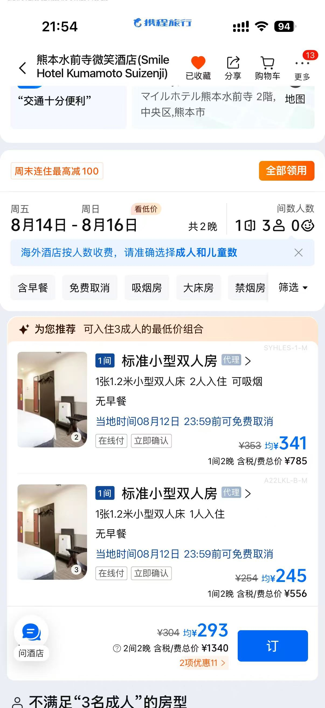
《萤火之森》这一天能做，但它是九州段里最不稳定的一天；
风险主要来自 南阿苏铁道 / 高森地方巴士 / 阿苏火口线巴士 / 火山口开放情况。
1）早上按原计划尽量早出发没有问题；
2）先保住 上色见熊野座神社；
3）下午阿苏段要按当天实际情况决定强度，不要死卡“全都要”。
如果当天任何一段晚点、或火山口限制升级：
1）优先保留 上色见熊野座神社；
2）阿苏下午改成 草千里 或 阿苏山上 二选一；
3）不要为了赶最后一班火口线把整天节奏弄崩。
1）阿苏火口限制当天必须再查：
阿蘇火山火口規制情報
2）南阿苏铁道和地方巴士这部分，不在JR Pass的价值逻辑里，所以这一天更不构成“买全九州7日券”的理由；
3）一定要给返程留缓冲，不要用“最后一班一定赶得上”来做计划。
第二天早上早起，从熊本站出发
需要提前查阅好火山情况：
阿蘇火山火口規制情報
1、需要考虑旅游季景区人数问题，所以时间要充分预留一些（箱根前车之鉴
2、建议自备一餐干粮

动漫萤火之森的取景地
早上6:30，从熊本站出发，乘坐JR到达高森，全程约1.5h，8:15到达高森
（后半段不是普通JR主线区间，需要另外补一部分票，约490円）

从高森站乘坐巴士前往神社入口：
高森-神社
- 去程（右回り）： 08:36 从高森站前发车 ➔ 09:05 抵达上色见熊野座神社入口。
- 回程（左回り）： 10:49 在神社入口上车 ➔ 11:22 抵达高森站前。

此时时间充裕，可以在车站打卡弗兰奇(Franky)雕像；
然后可以步行10分钟前往隧道公园逛逛。

之后最早的一班前往阿苏的班次是在13:00发出，14:20到达阿苏（南阿苏铁道需另外购票）

此时乘坐最后一便景区巴士(14:35)，巴士会在过程中经过草千里，直接坐到终点站：阿蘇山上ターミナル，此时时间为15:10；
2000円往返
最后16:30最后一便车，一定要提前15min左右在站台候车，否则很有可能回不去，那就寄了~

从阿苏站搭乘景区公交，前往草千里观景台，大概25min

从草千里站搭乘景区公交（阿苏火口线），前往阿苏火山 Crater，大概35min


顺利的话，会在17:03到达阿苏站，出站打卡乌索普雕像
之后乘坐jr返回熊本，车程1h30min；
因为熊本部长办公室在晚上7:00关门，所以大概率是赶不上的，不过也无所谓，晚上在熊本吃个晚饭，慢慢逛逛。
早餐：便利店 600円
午餐：阿苏线机动简餐 / 自备干粮，按 800 - 1200円
晚餐：勝烈亭 新市街本店，按 3000円 预算
今晚继续连住 熊本同一家酒店；
这天强度高，不换酒店会明显更稳。
这一天路线本身是合理的：熊本市内白天 ➔ 下午回熊本站 ➔ 晚上去鹿儿岛中央
不需要大改。
推荐继续保留 熊本市电一日券，但价格要按新版本理解：
1）手机版 500円
2）纸质版 700円
熊本市交通局
这一天如果单看市内交通，买手机版市电一日券仍然划算；
但这和全九州JR Pass是两套东西，并不会帮7日JR Pass回本。
1）如果最后不想折腾手机票，也可以现场买纸质版，只是会贵 200円；
2）下午尽量按原计划在 16:00 前 回到熊本站，避免压缩去鹿儿岛后的晚间行程。
时间安排 早上先退房 把行李寄存到车站 然后开始一个白天的行程
下午4点之前回到熊本站，乘坐九州新干线到达鹿儿岛中央站，全程大概1h


熊本部长演出时间表：早上十点开始营业
熊本部长办公室
注意：如果要买熊本熊周边的话，建议不要在这里买，其他商店街有很多
14F观景台（無料）

开放时间不需要参考google的，实际是：
- 周末及节假日： 09:00 ～ 22:00
- (对比平日为 08:30 ～ 22:00)
由于周末市役所的常规办公区域不开放，不能从正门进入，需要绕到大楼一楼南侧的专用入口（南侧玄关），那里有係員值守，可以直接从那里乘坐电梯直达 14 楼。
每天九点到五点开放
门票800円

参观完后，中饭可以在下通商店街解决，这里很多拉面店，人均1000円

打卡路飞雕像

游玩结束后乘坐熊本市电 - A-Line返回，有轨地上电车
时间 下午四点之前返回熊本站，乘坐新干线前往鹿儿岛

goat级别的炸猪排


早餐：便利店 600円
午餐：桂花 本店，按 1000円左右
晚餐：遊食豚彩 いちにいさん，按 约4600円 / 人
今晚住 鹿儿岛酒店，短停 1 晚；
以 价格合适、可洗衣 / 可寄存、第二天早出门方便 为主。
时间规划 下午从熊本乘坐九州新干线到达鹿儿岛中央站，全程大约1h，到达时间大概晚上五点多
中央站乘坐摩天轮（希望能看到日落黄昏），吃鹿儿岛黑猪肉，
之后前往城市观景台，之后沿着海岸线逛到天文馆商店街
第二天早上九点从鹿儿岛站乘坐city view前往仙石园
交通 推荐购买 CUTE 1日券 1300円
鹿儿岛交通券
第一天不用购买，第二天去仙岩园和樱岛，可以购买
地点就位于鹿儿岛中央站附近，非常近
鹿儿岛摩天轮

一圈大概是14min30s
（现在官方普通成人票已经是 800円；如果有 JQ CARD，成人价是 700円

选择市电加上步行的方法，单程时间大约30min

鹿儿岛特产黑猪肉
人均200RMB

摩天轮下来后晚上可以在鹿儿岛随便逛逛，可以去鹿児島天文館本通り逛逛
然后可以一直走到海边，在海边随便逛逛
这一天主线可以保留：仙岩园 ➔ 水族馆 ➔ 樱岛 ➔ 晚上去宫崎
而且 CUTE 1日券 依然推荐买。
CUTE 当前官方价格：
1）1日券 1,300円
2）2日券 1,900円
它覆盖 市巴士 / 市电 / City View / Sakurajima Island View / 樱岛 ferry
鹿儿岛 CUTE 官方
这一天的城市交通和樱岛交通，核心都在 CUTE 里；
所以这一整天也不是JR Pass的回本主力。
1）时间上最关键的是下午在樱岛不要拖太晚；
2）如果当天体力下降，优先保住 仙岩园 + 樱岛，水族馆可以缩短；
3）晚上去宫崎是长距离移动，简单吃饭即可，不建议再临时加夜景点。
1、仙岩园（早上九点开放!

里面还有一个猫猫神社，记得去噢~
交通 第二天早上出发，直接从鹿儿岛中央站乘坐city view或者日丰本线前往
（city view包含在 CUTE 里，日丰本线则是单独买票）

10:30左右，乘坐city view（半小时一班）回到水族馆

在水族馆附近吃午饭后，游玩水族馆
1、廻る寿司めっけもん （人均150-200，无需预约
11:00开始营业

回转寿司的顶级らしいです，多位up推荐
おすすめ：金枪鱼大腩、炙烤星鳗寿司

（持有一日券情况下，门票1600円
收集纪念章 水族馆内通常设有精美的纪念印章，有时还会推出期间限定的科普手册
大概需要游玩2个小时
之后，14:00左右，在港口乘船前往樱岛，时间约15min
渡轮很密集，不用担心没有船往返
桜島フェリー
(记得带条毛巾 足汤)

轮渡上岛后，乘坐樱岛巴士巡游 (Island View)
到下午16:30，每30分钟一班车樱岛巴士
时间考虑，建议3:40这班或之前离开展望台，返回桜島港
这是巴士线路的最高点（海拔 373 米），也是离火山口最近的地方。巴士会在这里停靠约 10 分钟供游客下车拍照，可以俯瞰火山的荒凉质感和整个鹿儿岛市的全景。
在返回码头的途中，这里有长达百米的免费足浴池，可以一边泡着天然温泉缓解一天的疲劳，一边近距离看着夕阳海景。
时间规划 16:30左右乘船，返回鹿儿岛港，然后返回JR鹿儿岛站，
简单吃个晚饭，然后乘坐日丰本线或者JR雾岛号前往宫崎市
全程大概3h，大概晚上九点到达宫崎站。

一晚人均131元，房间也挺好的，行李寄送，洗衣服务都有。
可以取消）
1）只住 8.16 这1晚，主要任务是承接熊本过来后的休息和第二天一早出发；
2）既然鹿儿岛这站本来就是“短停 1 晚”，价格合适、功能完整就已经很够用了；
3）有洗衣和行李服务，对九州中后段很友好。
1）确认它到鹿儿岛中央 / 鹿儿岛站体系到底更近哪边；
2）因为第二天要早出门，最好确认早餐和退房时间。

早餐：便利店 600円
午餐：廻る寿司めっけもん，按 3450 - 4600円
晚餐：去宫崎前简餐，按 1000 - 1500円
今晚开始住 宫崎 2 晚；
可以在 车站近的商务酒店 和 更便宜的日式旅馆 两档里选。
例如 JR宫崎酒店 这类，先按 人均300元 / 晚 记；
优点是离车站近、8.19 早上赶 Phoenix号 更轻松，也更适合连住。
先按 人均150元 / 晚 记；
可以提前取消，预算更省，但离宫崎站较远，步行大约 1.5km，而且老房子的隔音会差一些。
这一天路线本身是顺的：宫崎站 ➔ 鹈户神宫 ➔ 日南太阳花园 ➔ 青岛 ➔ 回宫崎市区
依旧建议以海岸线这条主线为核心，不要再额外加太多点。
VISIT MIYAZAKI BUS PASS 当前官方价格是 2,000円 / 1日
面向外国游客，可用于宫崎交通的一般路线巴士。
VISIT MIYAZAKI BUS PASS
1）日南海岸巴士班次疏，出发前一定要拿最新纸质时刻表；
2）这一天的核心是地方巴士，不是JR，所以仍然不构成“买全九州7日券更划算”的理由；
3）晚上如果还想吃预约店，白天一定不要压线。
时间规划 前一天晚上到达宫崎市，第二天早上出发，一路南下

早上9:40那班最早的巴士从宫崎站出发，11:07到达鹈户神宫；
13:22从鹈户神宫出发，13:27到达日南太阳花园；
15:31从日南太阳花园出发，16:00到达青岛；
青岛返回宫崎站可以坐JR，班次方便，但是需要注意预约的牛肉的timing
晚上在宫崎市区吃吃逛逛；
沿着海岸线 宫崎站-巴士-鹈户神宫-巴士-日南太阳花园-青岛-JR-宫崎站

交通 Visit Miyazaki Bus Pass（宫崎交通一日券）、
2000円
注意 日南海岸的巴士大约每 1 到 1.5 小时才有一班，在宫崎站的巴士中心上车前，务必先拿一份最新的纸质时刻表。

2、日南太阳花园（周三休园


这座塔始建于 1940年（昭和15年），物理实体上最特殊、也最具争议的一点。整座塔高约 37 米，使用了近1800块来自各地的基石，塔基中包含大量来自中国（如长城、紫禁城、上海、南京等）、朝鲜半岛以及东南亚的石块。
石头上的刻字可能可以分辨出来：上海、长城等。
1）日向夏的酒精饮料
- 九州CRAFT日向夏 (Hideji Beer / ひでじビール)： 这是宫崎当地极其出名的一款水果拉格啤酒（Fruit Lager）。它完美保留了日向夏的果香，苦味较低，口感非常顺滑。
- KIRISHIMA Hyuganatsu (雾岛酒造)： 雾岛酒造虽然以出产“黑雾岛”烧酎闻名全国，但他们出产的这款日向夏发泡酒也非常惊艳，使用了宫崎地下清澈的裂罅水酿造。
在宫崎的便利店就可以买到。
2）焼肉・鉄板焼ステーキ 橘通りミヤチク APAS
需要提前预约！

焼肉・鉄板焼ステーキ 橘通りミヤチク APAS メニュー：おすすめメニュー - 楽天ぐるなび
人均300+ 自助套餐 需要提前了解一下点什么
早餐：便利店 600円
午餐：海岸线途中简餐，按 1000 - 1500円
晚餐：橘通りミヤチク APAS，按 6500 - 7000円
今晚继续住 宫崎同一家酒店；
第二天直接坐 Phoenix 回福冈，不再换酒店最省事。
例如 JR宫崎酒店 这类，先按 人均300元 / 晚 记；
优点是房间条件更稳、离宫崎站更近，8.19 早起赶巴士的动线最好。
先按 人均150元 / 晚 记；
也可以提前取消，但离宫崎站较远，步行大约 1.5km，更适合优先压预算的走法。
待定，但是价格合适的酒店还是很多的。
例如人均300元 / 晚则能住到很不错的JR宫崎酒店

房间很好，人均300一晚，可以提前取消
或者日式的这家，更经济实惠，也可以提前取消
不过离宫崎站较远，走路要1.5km，但也可以接受，不赶时间

房间还行，就是地板隔音有点差，人均150一晚
1）这里会连住 8.17 - 8.18 共2晚，所以宫崎这站最重要的是稳定、别折腾；
2）如果 8.19 要早起坐 Phoenix 号，更推荐方案A，离车站近很多；
3）如果更想压住宿预算、也接受步行和老房子的取舍，方案B 会更省。
1）最终到底是走“车站近优先”还是“压预算优先”；
2）无论选哪家，都要确认 8.19 早上赶巴士时的出门动线。
既然已经决定 8.19 坐高速巴士回福冈，那么最合适的就是选 フェニックス号 里中午12点前后或之前到达福冈 的那班；
这样最能保住你下午在福冈市区休整和逛街的时间。
按现在的需求，最合适的是：
1）11:30 - 11:50 左右到博多 / 天神
2）或者 12:10 - 12:30 左右到博多 / 天神
1）如果希望更早到，考虑 宫崎站 7:00 左右出发，大约 11:32 到博多BT / 11:48 到西铁天神高速BT
2）如果想接近正午，考虑 宫崎站 7:30 左右出发，大约 12:11 到博多BT / 12:27 到西铁天神高速BT
3）如果住的是这里写进文档的 Akasaka / Tenjin WEST 一带，在西铁天神高速BT下车会更顺
1）这条线是 座席指定制 / 要预约
2）不能车上买票，必须提前预约并完成购票 / 发券
3）普通成人单程 7,000円
4）动态票价目前是 3,500円 - 7,000円
5）动态票价是 网络限定，而且预约后3天内要付款；如果离乘车日不足3天，则要在前一天前付清，当天预约则需要立刻付款
6）官方写明预约从乘车日1个月前开始
1）全车禁烟，车上有洗手间；
2）途中通常会在 霧島SA 和 宮原SA 各休息约15分钟；
3）暑假是旺季，想保住“中午前后到福冈”的目标，建议尽早订，不要等临近出发再看；
4）如果最后住在 Akasaka / Tenjin 一带，下车点优先考虑 西铁天神高速BT；
5）如果后面更看重第二天去机场最省事，也可以直接选 博多BT 下车。
这一天继续按现在的回国日逻辑执行即可：
1）最晚 16:00 - 16:30 到福冈机场国际线；
2）最晚 15:30 - 16:00 就该回酒店 / 博多 / 天神取行李；
3）回国日不要再临时加大学或远郊点。
目前选的 Akasaka Station / LiVEMAX Fukuoka Tenjin WEST 是可行的；
只是去机场国际线时比住博多多一点换乘和时间管理，所以当天更要守住“提前收线”这个原则。
不同于东京和大阪那种一直紧绷着跑景点的大城市，最后这一天半就以休息、购物和收尾为主。

优点：不用换乘，直接到博多BT / 天神BT，一路坐到福冈最省脑；
缺点：车程更长，通常需要 4小时20分 - 4小时50分 左右。
适合：前一晚在宫崎玩得比较晚，第二天想省事直达、并且尽量中午前后到福冈。
上午从宫崎出发，中午前后到福冈；
下午不要再排太远的点，先把节奏放慢，把这一天当成真正的休整日。
这两天住 博多站附近 或 Akasaka / 天神西侧 都成立。
原因很简单：
1）8.19 坐 フェニックス号 回福冈，接到博多或天神都比较顺；
2）8.20 你晚上要去福冈机场国际线，所以无论住哪边都要提前收线；
3）如果住 Akasaka / Tenjin WEST，8.19 晚上在天神、大名、中洲活动会更舒服。

下午建议先在 Acros Fukuoka / 天神 / 商业街 这一带慢慢逛；
这里很适合做福冈最后的购物和城市散步，不需要赶。

沿着河边慢慢走，挑一家看着顺眼的屋台吃点东西，很适合旅程最后阶段。

如果当天想吃得更稳，就先去一蘭，再把中洲当散步项目。
这一天不建议再硬塞 福冈塔 / 九州大学 / LaLaport，不然“收尾日”会又变回赶路日。
1）今天是回国日，所以行程必须围绕 退房、寄存、拿行李、去国际线 来排；
2）九州大学伊都校区不建议放在主线里，因为它太远，会把今天重新拉成一整天折返；
3）真正推荐保留的，是 福冈塔 和 LaLaport 这两个更适合最后一天的点。
一般酒店退房时间多半在 10:00 - 11:00；
退房后直接把行李寄存在酒店前台，晚上出发去机场前再回来拿。
如果酒店不能寄存，再考虑放到 博多站寄存柜。

门票大概 640 - 800円；
这一块更适合放在白天或傍晚前，不建议压到最后一刻。
上午去塔和海边散步，节奏会比 8.19 更舒服，也更适合拍照。
看高达，顺便逛逛街

除非台风或者暴雨，否则都能看到夜晚的灯光秀表演和机械运作
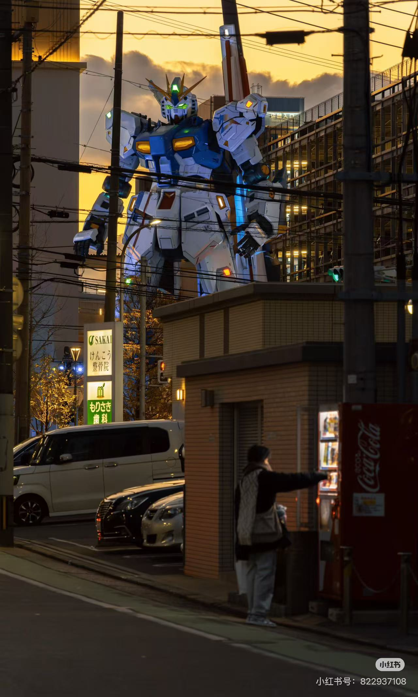
复刻打卡一下这个机位
这个点适合放在回酒店 / 寄存点取行李之前或之后，看你当天买东西多不多来决定；
如果中午就已经买了很多东西，那就建议先回酒店 / 博多站取行李，再去LaLaport，最后直接去机场。

从博多站过去大概要 1小时左右，来回吃时间；

所以纯可选项：
只有在 8.20 一早特别早起、时间充裕的情况下，再单独去。
总结：8.20 不建议同时保福冈塔 + 九州大学 + LaLaport。
8.19：早餐 600円；午餐 1000 - 1500円；晚餐 1500 - 3000円（或一兰 1000円左右）
这两天住 HOTEL LiVEMAX Fukuoka Tenjin WEST，先按 人均150元 / 晚 记；
重点是兼顾 8.19 天神 / 中洲活动 和 8.20 去机场国际线。

地址在 大名 2 丁目 一带，离 地下铁机场线 Akasaka Station 很近；
从这里去 天神 / Acros / 大名 / 中洲 都比较顺，8.19 住这里逛市区会很舒服。
这晚先按人均150元记。
对这次两天行程的适配性：
1）8.19 到达福冈后，接去赤坂 / 天神这一带都不难；
2）8.19 晚上 去天神、大名、中洲这些点，比住得太偏更方便；
3）8.20 去福冈机场国际线 也能走地下铁机场线这一套，只是相比直接住博多，最后一步会多一点换乘和时间管理。
1）是否支持 退房后寄存行李；
2）具体的 check-out 时间，这样 8.20 白天安排会更稳。

福冈机场牛逼就牛逼在离市区很近。
建议最晚 16:00 - 16:30 就到达福冈机场国际线；
这样可以把值机、托运行李、安检和最后买点东西的时间都留出来，不会太赶。
1）先从酒店 / 寄存点取好行李；
2）从博多站前往机场方向；
3）如果走的是常规公共交通，就记得国际线和国内线不是同一栋楼，要把换乘和接驳时间一起算进去。
下午 15:00 - 15:30 左右结束市区行程；
最晚 15:30 - 16:00 回到酒店 / 寄存点取行李；
然后直接去福冈机场，不要再临时加点。
1）早餐统一按 便利店 600円 计算；
2）文中写的是人民币价格的餐厅，这里按 2026年4月上旬 1 RMB ≈ 23 JPY 粗算成日元；
3）只统计三餐，不把零食、酒饮和景区小吃并入正餐。
早餐：便利店 600円
午餐：日田主线中去打卡jsc打工过的店，按 1000 - 1400円
晚餐：熊本市区简餐，按 1000 - 1500円
早餐：便利店 600円
午餐：阿苏线机动简餐 / 自备干粮，按 800 - 1200円
晚餐：勝烈亭 新市街本店，按 3000円 预算
早餐：便利店 600円
午餐：桂花 本店，文中已写熊本午饭按 1000円左右
晚餐：鹿儿岛黑猪肉 遊食豚彩 いちにいさん， 人均200 RMB，折算约 4600円
早餐：便利店 600円
午餐：廻る寿司めっけもん，文中已写 150 - 200 RMB，折算约 3450 - 4600円
晚餐：去宫崎前简单晚饭，按 1000 - 1500円
早餐：便利店 600円
午餐：海岸线途中简餐，按 1000 - 1500円
晚餐：橘通りミヤチク APAS，文中已写 300+ RMB；结合公开菜单和店铺预算，这里按 6500 - 7000円
早餐：便利店 600円
午餐：天神 / Acros 一带简餐，按 1000 - 1500円
晚餐：中洲屋台 按 1500 - 3000円；如果改去 一蘭本社総本店，按 1000円左右
早餐：便利店 600円
午餐：福冈塔 / LaLaport 一带简餐，按 1000 - 1500円
晚餐：机场 / 市区收尾简餐，按 1000 - 1500円
1）按 2026 年 4 月核到的信息整理；
2）像火山口、神社本体、城市散步这类不一定单收门票的，不重复硬算；
3）文中原先写过的旧价格，如果和 2026 年官方不一致，以这里为准。
1）進撃の巨人 in HITA ミュージアム ANNEX：700円
2）如果把日田市内两馆都看，共通券 1000円
日田市官方
1）高森湧水トンネル公園：300円（如果去）
南阿苏铁道沿线介绍
2）上色见熊野座神社 本身免费
1）熊本城：800円
熊本城官方
2）水前寺成趣园：500円（2026年4月起）
水前寺成趣园官方
1）仙岩园：1600円
仙岩园官方
2）鹿儿岛水族馆：1600 - 2000円
备注：官方成人票 2000 円；文中原先按 CUTE 优惠思路记过 1600 円，这里保留成区间。
鹿儿岛水族馆官方
3）Amuran 摩天轮：800円
备注：2026年4月官方普通成人票为 800円，JQ CARD 会员价为 700円；目前没有确认到可靠的 CUTE 联动优惠，所以这里不再按 CUTE 折扣计算。
Amuran 官方
1）鹈户神宫：免费
2）日南太阳花园（Sun Messe Nichinan）：1000円
Sun Messe Nichinan 官方
当前主线里的 Acros / 天神 / 中洲屋台 不需要固定门票。
1）福冈塔：1000円（2026年4月官方成人票）
福冈塔官方
2）LaLaport / 高达外观打卡 本身免费
1）以下只统计交通相关支出，不含门票、餐饮、住宿；
2）尾道部分不含租车费用，只算城际交通和市内公共交通；
3）九州段因为 8.15 阿苏当天机动、8.19 凤凰号动态票价、8.20 福冈市内机动 仍有浮动，所以按区间估算。
如果后面抢到了 高松早卖巴士票、或者 8.19 凤凰号拿到低动态票价，总交通还可以再往下压一点。
1）以下统一按文档里现在写的人均人民币口径来记；
2）这里只算住宿本身，不含早餐、税费浮动、门票和交通；
3）宫崎目前还保留了两档酒店，所以九州段住宿会写成区间。
如果最后在宫崎选择离车站更近的酒店，住宿总额会落在上沿；如果继续走便宜旅馆方案，总额会更接近下沿。
1）早餐统一按 便利店 600円 计算；
2）没写死具体餐厅的午晚餐，按当地便宜餐馆均价估；
3）文中原本用人民币写的餐厅，统一按 2026年4月上旬 1 RMB ≈ 23 JPY 粗算；
4）这里只算每日三餐，零食、甜品、酒水和景区小吃未并入总额。
1）这里只统计景点门票 / 观览费，不含交通、餐饮、住宿；
2）标成“可选”的项目，已经在区间里体现；
3）若临近出发前个别景点再次调价，以景点官方公告为准。
1）为了把四类费用放到同一口径里，这里先把住宿的人均人民币按 1 CNY ≈ 23.3 JPY 粗算成日元；
2）这个汇率按 2026年4月中旬 的中间价近似处理，只用于预算估算；
3）实际刷卡、现金兑换、平台结算时会有少量偏差，所以综合预算只看区间即可。
1）九州段 占了绝大部分波动，尤其是 8.15 阿苏、8.19 Phoenix 号、宫崎住宿档位；
2）大阪段 是否登 Harukas 300 是最明确的一笔可选差额；
3）濑户内海段 的餐饮和高松早卖巴士票，会带来中等强度的上下浮动；
4）整体上看，真正把预算拉开的，不是单个门票，而是九州段交通 + 餐饮 + 住宿 的叠加。
放在攻略最后，和正文里的交通、住宿、餐饮、门票总览互相对应；比例按预算区间中位数估算。
住宿按 1 CNY ≈ 23.3 JPY 粗算入日元总额；交通由综合总额与其他三类费用反推后校准。